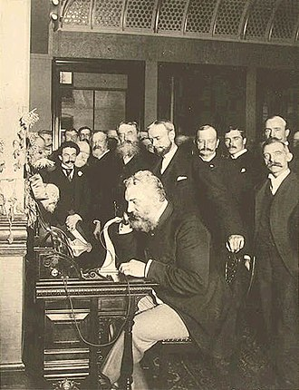

După ce s-a mutat la locuința surorii ei din Shelbyville, Illinois ,la 19 ani s-a căsătorit cu William Cochran la 13 octombrie 1858. William se întorsese cu un an înainte de la o încercare dezamăgitoare la Rush-ul din California , dar continuase să devină un prosper comerciant de mărfuri uscate și democrat.
Afișând semne timpurii ale independenței și încrederii sale, a luat numele soțului său, dar l-a scris cu o „e” pe final - spre supărarea ordinilor sale.
Copiii
Josephine și William au avut 2 copii: Hallie și Katharine.
În 1870 familia s-a mutat într-un conac și ea a intrat în societatea din Chicago. După o cină la un eveniment, unele dintre farfurii au fost tăiate în timp ce se spălau, determinând-o să caute o alternativă mai bună la spălarea vaselor. De asemenea, a vrut să scutească gospodinele obosite de datoria de a spăla vasele după masă.
Soțul ei alcoolic a murit în 1883, când avea 45 de ani, lăsând-o cu numeroase datorii și foarte puțini bani, ceea ce a motivat-o să treacă la dezvoltarea mașinii de spălat vase. Prietenilor ei le-a plăcut invenția și au convins-o să facă mașini de spălat vase pentru ei, numindu-le „Mașini de spălat vase Cochrane”, fondând ulterior Garis-Cochran Manufacturing Company.
Masina de spalat vase
Primii câțiva bărbați pe care a încercat să-i angajeze pentru a-și pune designul în realizare au insistat să-și schimbe designul, iar rezultatele nu au funcționat. Au fost făcute alte încercări de a produce o mașină de spălat vase viabilă comercial. În 1850, Joel Houghton a conceput un filtru de mâncare cu manivelă. În anii 1860, LA Alexander a îmbunătățit pe dispozitiv cu un mecanism adaptat, care a permis utilizatorului să învârtă vasele printr-o cadă cu apă. Niciunul dintre aceste dispozitive nu a fost deosebit de eficient.
Cochrane a proiectat primul model al mașinii de spălat vase în șopronul din spatele casei sale din Shelbyville, Illinois . George Butters a fost un mecanic care a asistat-o la construcția mașinii de spălat vase; a fost și angajat la prima fabrică de mașini de spălat vase. Pentru a construi mașina, ea a măsurat mai întâi vasele și a construit compartimente din sârmă, fiecare special concepute pentru a se potrivi fie farfurii, căni sau farfurioare. Compartimentele erau așezate în interiorul unei roți care se așternea în interiorul unui cazan de cupru. Un motor a întors roata în timp ce apa fierbinte cu săpun a ghemuit de pe fundul centralei și a plouat pe vase. Mașina de spălat vase a fost prima care a folosit presiunea apei pentru a curăța vasele din mașină. După ce a primit un brevet la 28 decembrie 1886
Compania de producție Garis-Cochran a devenit parte a KitchenAid, iar în 1949, a fost introdusă prima mașină de spălat vase KitchenAid bazată pe designul Cochran. În anii '50, mașinile de spălat vase au devenit un obiect gospodăresc comun după ce au fost construite noi case suburbane cu instalațiile sanitare necesare pentru a gestiona apa caldă suplimentară.
Stamps of Romania, 2013. Josephine Cochrane

Bell la deschiderea liniei de lungă distanță de la New York la Chicago în 1892